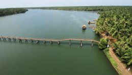

Valiyaparamba
Separated from the mainland by backwaters, Valiyaparamba fishing village is an island with the Arabian Sea as one of the borders. Located about 30 km from Bekal, Valiyaparamba backwaters is one of the most picturesque backwater boroughs in Kerala. The island located in River Tejeswini, is known for its natural beauty.

Ranipuram Hill Station
RANIPURAM Formerly known as Madathumala. About 48 KMs east of Kanhangad. Lying 780 meters above sea level. In beauty and boundary of nature comparable to Ooty. An ideal place for trekking. Tourist cottages are available here.
Bekal Fort
Bekal – Bekal Fort, is the largest fort in Kerala, situated at Bekal, Pallikera village in Hosdurg Taluk in Kasaragod district, Kerala and it is 65 km from Mangalore city spreading over 40 acres.